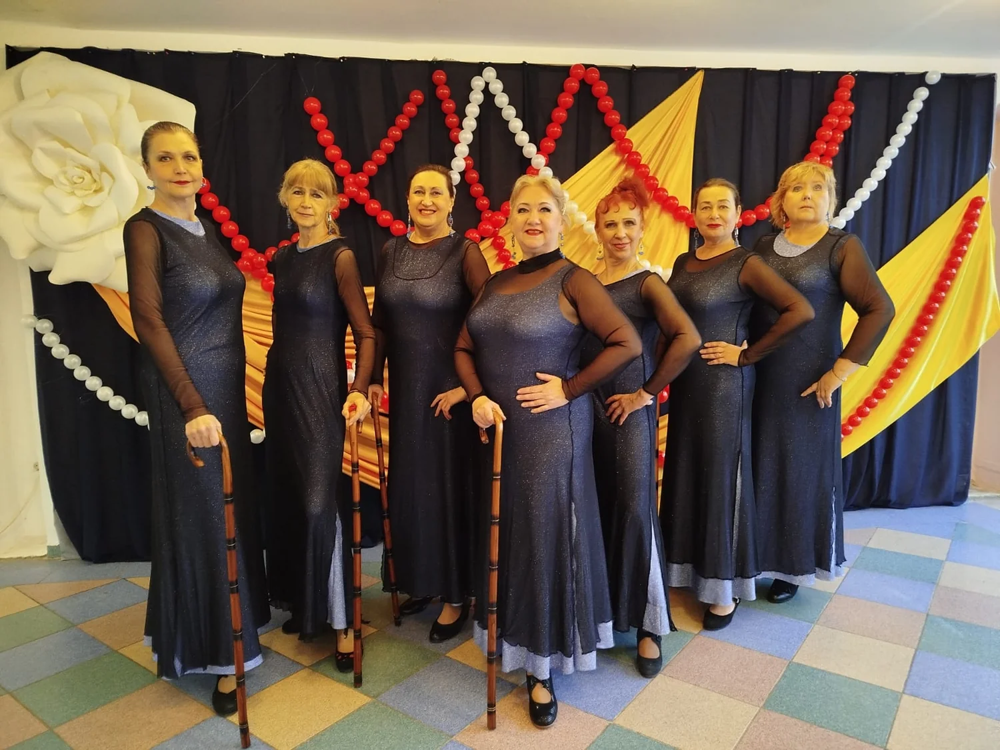

21 ноября 2026
Фестиваль в Боровске
Коллектив выступил на VIII межрегиональном фестивале Tierra Flamenca.
Репортаж театраТеатр и школа
Две истории из жизни Costa del Flamenco. Все выступления, альбомы и публикации доступны в разделах официального сайта.

21 ноября 2026
Коллектив выступил на VIII межрегиональном фестивале Tierra Flamenca.
Репортаж театра
30 мая 2026
Кадры майской программы и отклики зрителей после концерта.
Фотографии и отзывы